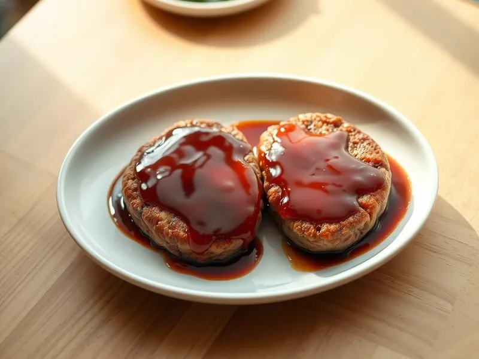

Хамбагу - японские котлеты в соусе из кетчупа и соевого соуса
Толстые сочные котлеты из фарша под блестящим соусом из кетчупа, соевого соуса и сливочного масла
30 мин4 порц.476 ккал на порциюБ 25 · Ж 37 · У 12Азиатская кухня
Открыть в приложении: порции, таймеры, список покупок
Продукты на 4 порц.
- Фарш свино-говяжий500 г
- Лук репчатый1 шт
- Панировочные сухари3 ст. л.
- Вода80 мл
- Яйцо куриное1 шт
- Кетчуп3 ст. л.
- Соевый соус2 ст. л.
- Сливочное масло15 г
- Растительное масло1 ст. л.
- Соль2 щеп.
Как готовить
- Мелко нарежьте лук и обжарьте на половине масла на среднем огне 4 минуты до мягкости, переложите в миску и остудите 2 минуты. Залейте сухари 3 ст. л. воды.
- Добавьте к луку фарш, размокшие сухари, яйцо и соль, вымешивайте 2 минуты. Слепите 4 толстые овальные котлеты и продавите в центре каждой неглубокую ямку.
- Обжарьте котлеты на оставшемся масле на среднем огне по 3 минуты с каждой стороны до тёмно-коричневой корочки.
- Влейте оставшуюся воду, накройте крышкой и готовьте на слабом огне 8 минут, пока сок при проколе не станет прозрачным. Переложите котлеты на тарелку.
- В ту же сковороду добавьте кетчуп, соевый соус и сливочное масло, прогрейте на среднем огне 1 минуту, помешивая, до блестящего густого соуса. Полейте котлеты и подавайте.
Совет. Ямка в центре не даёт котлете вздуться шаром при жарке, поэтому толстый хамбагу прожаривается ровно и не трескается.